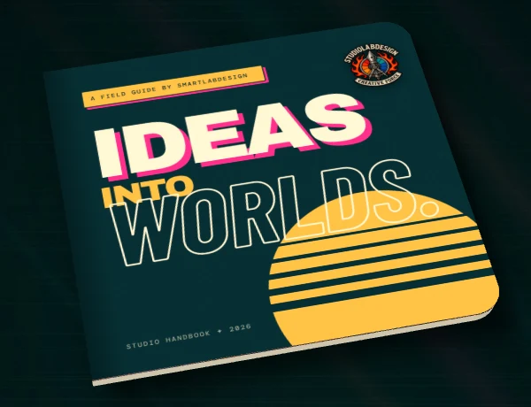
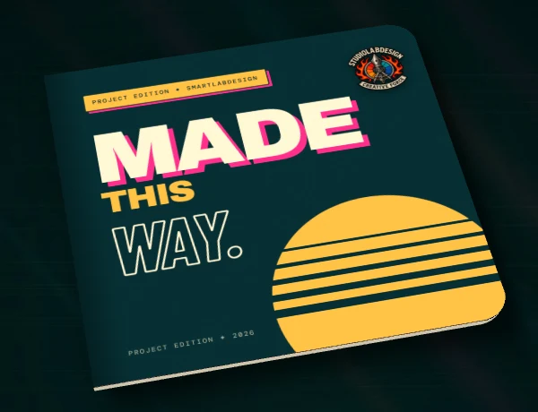

Two interactive books, built with the same moving-layers engine. Turn the pages on a desktop or a phone.

A field guide to how an idea becomes a world: the studio’s method, page by page.

Seven projects the studio shipped, and how they were made: the real tools, live inside the pages.